가스기사 (2016-05-08 기출문제)
1과목: 가스유체역학
1. 기계효율을 ηm, 수력효율을 ηh, 체적효율을 ηv라 할 때, 펌프의 총효율은?
- (ηm×ηh)/ηv
- (ηm×ηv)/ηh
- ηm×ηh×ηv
- (ηv×ηh)/ηv
(정답률: 90%)

2. 비중 0.9인 유체를 10ton/h의 속도로 20m 높이의 저장탱크에 수송한다. 지름이 일정한 관을 사용할 때 펌프가 유체에 가해준 일은 몇 ㎏f·m/㎏인가?(단, 마찰손실은 무시한다.)
- 10
- 20
- 30
- 40
(정답률: 61%)
3. 액체를 수송할 때 흡입관 또는 펌프 속에 공동현상(cavitation)이 일어날 수 있는 조건과 가장 거리가 먼 것은?
- 흡입압력(suction pressure)이 대기압보다 낮을 때
- 흡입압력이 증기압보다 낮을 때
- 흡입압력수두와 증기압수두의 차가 유효흡입수두(net positive suction head)보다 낮을 때
- 흡입압력수두가 증기압수두와 유효흡입수두의 합보다 낮을 때
(정답률: 59%)
4. 내경이 40㎝, 길이가 500m인 관에 평균속도가 1.5m/s로 물이 흐르고 있을 때 Darcy 식을 사용하여 마찰손실 수두를 구하면 약 몇 m인가? (단, Darcy 마찰계수 f는 0.0422이다)
- 4.2
- 6.1
- 12.3
- 24.2
(정답률: 78%)
5. 다음 중 등엔트로피 과정에 대한 설명으로 옳은 것은?
- 가역 단열과정이다.
- 가역 등온과정이다.
- 마찰이 있는 등온과정이다.
- 마찰이 없는 비가역 과정이다.
(정답률: 93%)
6. 질량 M, 길이 L, 시간 T로 압력의 차원을 나타낼 때 옳은 것은?
- MLT-2
- ML2T-2
- ML-1T-2
- ML2T-3
(정답률: 71%)
7. 경험적으로 낙하거리 s는 물체의 질량 m, 낙하시간 t 및 중력가속도 g와 관계가 있다. 차원해석을 통해 이들에 관한 관계식을 옳게 나타낸 것은? (단, k는 무차원상수이다.)
- s＝㎏t
- s＝㎏t2
- s＝kmgt
- k＝kmgt2
(정답률: 65%)
8. 일반적으로 원곤 내부 유동에서 층류만이 일어날 수 있는 레이놀즈수(Reynolds number)의 영역은?
- 2100 이상
- 2100 이하
- 21000 이상
- 21000 이하
(정답률: 92%)
9. 상온의 물속에서 압력파가 전파되는 속도는 얼마인가? (단, 물의 체적 탄성계수는 2×108㎏f/m2고, 비중은 1000㎏f/m3이다.)
- 340m/s
- 680m/s
- 1400m/s
- 1600m/s
(정답률: 50%)
10. 공기의 비열비는 k이고 기체상수는 R일 때 절대온도가 T인 공기에서의 음속은?
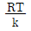
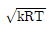
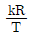
- kRT
(정답률: 93%)
11. 그림과 같이 물위에 비중이 0.7인 유체가 A가 5m의 두께로 차 있을 때 유출속도는 V는 몇 m/s인가?
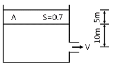
- 5.5
- 11.2
- 16.3
- 22.4
(정답률: 54%)
12. 어떤 유체의 밀도가 138.63[㎏f·s2/m4]일 때 비중량은 몇 [㎏f/m3]인가?
- 1.381
- 13.55
- 140.8
- 1359
(정답률: 66%)
13. 동력(power)과 같은 차원을 갖는 것은?
- 힘×거리
- 힘×가속도
- 압력×체적유량
- 압력×질량유량
(정답률: 69%)
14. 밀도가 892㎏/m3인 원유가 단면적이 2.165×10-3m2인 관을 통하여 1.388×10-3m3/s로 들어가서 단면적이 각각 1.314×10-3m2로 동일한 2개의 관으로 분할되어 나갈 때 분할되는 관내에서의 유속은 약 몇 m/s인가? (단, 분할되는 2개 관에서의 평균유속은 같다.)
- 1.0.6
- 0.841
- 0.619
- 0.528
(정답률: 47%)
15. 수축노즐에서의 등엔트로피유동에서 기체의 임계압력(P*)을 옳게 나타낸 것은? (단, 비열비는 k, 정체압력은 P0이다.)
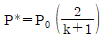
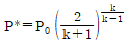
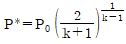
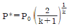
(정답률: 75%)
16. 레이놀즈수가 106이고 상대조도가 0.0⑤인 원관의 마찰계수 f는 0.03이다. 이 원관에 부차손실계수가 6.6인 글로브밸브를 설치하였을 때, 이 밸브의 등가길이(또는 상당길이)는 관 지름의 몇 배인가?
- 25
- 55
- 220
- 440
(정답률: 60%)
17. 원심 펌프가 높은 능력으로 운전되는 경우 임펠러 흡입부의 압력이 유체의 증기압보다 낮아지면 흡입부의 유체는 증발하게 되며 이 증기는 임펠러의 고압부로 이동하여 갑자기 응축하게 된다. 이러한 현상을 무엇이라고 하는가?
- 캐비테이션(cavitation)
- 펌핑(pumping)
- 디퓨전 링(diffusion ring)
- 에어 바인딩(air binding)
(정답률: 85%)
18. 수평원관에서의 층류 유동을 Hagen-Poiseuille 유동이라고 한다. 이 흐름에서 일정한 유량의 물이 흐를 때 지름을 2배로 하면 손실 수두는 몇 배가 되는가?
- 4
- 16
- 1/4
- 1/16
(정답률: 60%)
19. 수차의 효율을 η, 수차의 실제 출력을 L[PS], 수량을 Q[m3/s]라 할 때 유효낙차 H[m]를 구하는 식은?
- H＝L/(13.3ηQ) [m]
- H＝QL/13.3η [m]
- H＝Lη/13.3Q [m]
- H＝η/(L×13.3Q) [m]
(정답률: 60%)
20. 유체의 점성과 관련된 설명 중 잘못된 것은?
- poise는 점도의 단위이다.
- 점도란 흐름에 대한 저항력의 척도이다.
- 동점성 계수는 점도/밀도와 같다.
- 20℃에서의 물의 점도는 1poise이다.
(정답률: 79%)
2과목: 연소공학
21. 다음 중 리프팅(lifting)의 원인과 거리가 먼 것은?
- 노즐구경이 너무 크게 된 경우
- 공기조절기를 지나치게 열었을 경우
- 가스의 공급압력이 지나치게 높은 경우
- 버너의 염공에 먼지 등이 부착되어 염공이 작아져 있을 경우
(정답률: 56%)
22. 연소계산에 사용되는 공기비 등에 대한 설명으로 옳지 않은 것은?
- 공기비란 실제로 공급한 공기량의 이론 공기량에 대한 비율이다.
- 과잉공기란 연소 시 단위연료 당의 공급 공기량을 말한다.
- 필요한 공기량의 최소량은 화학 반응식으로부터 이론적으로 구할 수 있다.
- 공연비는 공기와 연료의 공급 질량비를 말한다.
(정답률: 76%)
23. 가연성 물질이 되기 쉬운 조건이 아닌 것은?
- 열전도율이 적어야 한다.
- 활성화에너지가 커야 한다.
- 산소와 친화력이 커야 한다.
- 가연물의 표면적이 커야 한다.
(정답률: 66%)
24. 열역학 제 2법칙에 어긋나는 것은?
- 열은 스스로 저온의 물체에서 고온의 물체로 이동할 수 없다.
- 열은 항상 고온에서 저온으로 흐른다.
- 에너지 변환의 방향성을 표시한 법칙이다.
- 제 2종 영구기관을 만드는 것은 쉽다.
(정답률: 83%)
25. 어떤 용기 속에 1㎏의 기체가 들어 있다. 이 용기의 기체를 압축하는 데 2300㎏f·m의 일을 하였으며, 이때 7kcal의 열량이 용기 밖으로 방출하였다면 이 기체의 내부 에너지 변화량은 약 얼마인가?
- 0.7kcal/㎏
- 1.0kcal/㎏
- 1.6kcal/㎏
- 2.6kcal/㎏
(정답률: 56%)
26. 폭굉유도거리(DID)가 짧아지는 경우는?
- 압력이 낮을 때
- 관지름이 굵을 때
- 점화원의 에너지가 작을 때
- 정상 연소속도가 큰 혼합가스일 때
(정답률: 68%)
27. 메탄을 공기비 1.3에서 연소시킨 경우 단열연소온도는 약 몇 K인가? (단, 메탄의 저발열량은 50MJ/㎏, 배기가스의 평균비열은 1.293kJ/㎏·K이고 고온에서의 열분해는 무시하고 연소 전 온도는 25℃이다.)
- 1688
- 1820
- 1961
- 2234
(정답률: 40%)
28. 방폭전기기기의 구조별 표시방법으로 틀린 것은?
- p - 압력(壓力) 방폭구조
- o - 안전증 방폭구조
- d - 내압(耐壓) 방폭구조
- s - 특수방폭구조
(정답률: 88%)
29. 기체연료의 주된 연소 형태는?
- 확산연소
- 액면연소
- 증발연소
- 분무연소
(정답률: 92%)
30. 압력 0.1MPa, 체적 3m3인 273.15K의 공기가 이상적으로 단열압축되어 그 체적이 1/3 으로 감소되었다. 엔탈피 변화량은 약 몇 kJ인가? (단, 공기의 기체상수는 0.287kJ/㎏·K, 비열비는 1.4이다.)
- 560
- 570
- 580
- 590
(정답률: 46%)
31. 위험성 평가기법 중 사고를 일으키는 장치의 이상이나 운전자 실수의 조합을 연역적으로 분석하는 평가기법은?
- FTA(Fault Tree Analysis)
- ETA(Event Tree Analysis)
- CCA(Cause Consequence Analysis)
- HAZOP(Hazard and Operability Studies)
(정답률: 69%)
32. 연료에 고정 탄소가 많이 함유 되어 있을 때 발생되는 현상으로 옳은 것은?
- 매연발생이 많다.
- 발열량이 높아진다.
- 연소효과가 나쁘다.
- 열손실을 초래한다.
(정답률: 77%)
33. 1기압의 외압에서 1몰인 어떤 이상기체의 온도를 5℃높였다. 이때 외계에 한 최대 일은 약 몇 cal인가?
- 0.99
- 9.94
- 99.4
- 994
(정답률: 62%)
34. 유독물질의 대기확산에 영향을 주게 되는 매개변수로서 가장 거리가 먼 것은?
- 토양의 종류
- 바람의 속도
- 대기안정도
- 누출지점의 높이
(정답률: 87%)
35. 공기가 산소 20v%, 질소 80v%의 혼합기체라고 가정할 때 표준상태(0℃, 101.325kPa)에서 공기의 기체상수는 약 몇 kJ/㎏·K인가?
- 0.269
- 0.279
- 0.289
- 0.299
(정답률: 58%)
36. 어떤 열기관에서 온도 20℃의 엔탈피 변화가 단위 중량당 200kcal일 때 엔트로피 변화량(kcal/㎏·K)은?
- 0.34
- 0.68
- 0.73
- 10
(정답률: 69%)
37. 유동층연소에 대한 설명으로 틀린 것은?
- 균일한 연소가 가능하다.
- 높은 전열 성능을 가진다.
- 소각로 내에서 탈황이 가능하다.
- 부하변동에 대한 적응력이 우수하다.
(정답률: 50%)
38. 자연 상태의 물질을 어떤 과정(Process)을 통해 화학적으로 변형시킨 상태의 연료를 2차 연료라고 한다. 다음 중 2차 연료에 해당하는 것은?
- 석탄
- 원유
- 천연가스
- LPG
(정답률: 90%)
39. 다음 중 연소 시 가장 높은 온도를 나타내는 색깔은?
- 적색
- 백적색
- 휘백색(輝白色)
- 황적색
(정답률: 87%)
40. 카르노사이클에서 열량을 받는 과정?
- 등온팽창
- 등온압축
- 단열팽창
- 단열압축
(정답률: 53%)
3과목: 가스설비
41. LNG의 기화장치에 대한 설명으로 틀린 것은?
- Open rack vaporizer는 해수를 가열원으로 사용한다.
- Submerged conversion vaporizer는 연소가스가 수조에 설치된 열교환기의 하부에 고속으로 분출되는 구조이다.
- Submerged conversion vaporizer는 물을 순환시키기 위하여 펌프 등의 다른 에너지원을 필요로 한다.
- Intermediate fluid vaporizer는 프로판을 중간매체로 사용할 수 있다.
(정답률: 63%)
42. 일반도시가스 공급시설에서 최고 사용압력이 고압, 중압인 가스홀드에 대한 안전조치 사항이 아닌 것은?
- 가스방출 장치를 설치한다.
- 맨홀이나 검사구를 설치한다.
- 응축액을 외부로 뽑을 수 있는 장치를 설치한다.
- 관의 입구와 출구에는 온도나 압력의 변화에 따른 신축을 흡수하는 조치를 한다.
(정답률: 50%)
43. 내용적 120L의 LP가스 용기에 50㎏의 프로판을 충전하였다. 이 용기 내부가 액으로 충만될 때의 온도를 그림에서 구한 것은?
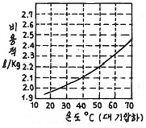
- 37℃
- 47℃
- 57℃
- 67℃
(정답률: 83%)
44. 천연가스의 액화에 대한 설명으로 옳은 것은?
- 가스전에서 채취된 천연가스는 불순물이 거의 없어 별도의 전처리 과정이 필요하지 않다.
- 임계온도 이상, 임계압력 이하에서 천연가스를 액화한다.
- 캐스케이드 사이클은 천연가스를 액화하는 대표적인 냉동사이클이다.
- 천연가스의 효율적 액화를 위해서는 성능이 우수한 단일 조성의 냉매 사용이 권고된다.
(정답률: 69%)
45. 저온수증기 개질에 의한 SNG(대체천연가스)제조 프로세스의 순서로 옳은 것은?
- LPG → 수소화 탈황 → 저온수증기 개질 → 메탄화 → 탈탄산 → 탈습 → SNG
- LPG → 수소화 탈황 → 저온수증기 개질 → 탈습 → 탈탄산 → 메탄화 → SNG
- LPG → 저온수증기 개질 → 수소화 탈황 → 탈습 → 탈탄산 → 메탄화 → SNG
- LPG → 저온수증기 개질 → 탈습 → 수소화 탈황 → 탈탄산 → 메탄화 → SNG
(정답률: 61%)
46. 저압배관에서 압력손실의 원인으로 가장 거리가 먼 것은?
- 마찰저항에 의한 손실
- 배관의 입상에 의한 손실
- 밸브 및 엘보 등 배관 부속품에 의한 손실
- 압력계, 유량계 등 계측기 불량에 의한 손실
(정답률: 78%)
47. 다음 [보기]와 같은 성질을 갖는 가스는?
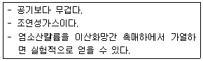
- 산소
- 질소
- 염소
- 수소
(정답률: 77%)
48. 가스배관의 굵기를 구할 수 있는 다음 식에서 “S”가 의미하는 것은?
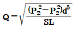
- 유량계수
- 가스 비중
- 배관 길이
- 관 내경
(정답률: 81%)
49. 아세틸렌(C2H2)에 대한 설명으로 옳지 않은 것은?
- 동과 직접 접촉하여 폭발성의 아세틸라이드를 만든다.
- 비점과 융점이 비슷하여 고체 아세틸렌은 융해한다.
- 아세틸렌가스의 충전제로 규조토, 목탄 등의 다공성 물질을 사용한다.
- 흡열 화합물이므로 압축하면 분해폭발 할 수 있다.
(정답률: 68%)
50. 액화가스 용기 및 차량에 고정된 탱크의 저장능력을 구하는 식은? (단, V : 내용적, P : 최고충전압력, C : 가스 종류에 따른 정수, d : 상용온도에서의 액화가스의 비중이다.)
- 10PV
- (10P＋1)V
- V/C
- 0.9dV
(정답률: 61%)
51. 정압기의 특성 중 유량과 2차 압력과의 관계를 나타내는 것은?
- 정특성
- 유량특성
- 동특성
- 작동 최소차압
(정답률: 76%)
52. 외부전원법으로 전기방식 시공 시 직류전원 장치의＋극 및 -극에는 각각 무엇을 연결해야 하는가?
- ＋극 : 불용성 양극, -극 : 가스배관
- ＋극 : 가스배관, -극 : 불용성 양극
- ＋극 : 전철레일, -극 : 가스배관
- ＋극 : 가스배관, -극 : 전철레일
(정답률: 65%)
53. 냄새가 나는 물질(부취제)의 주입방법이 아닌 것은?
- 적하식
- 증기주입식
- 고압분사식
- 회전식
(정답률: 67%)
54. 다음 중 양정이 높을 때 사용하기에 가장 적당한 펌프는?
- 1단 펌프
- 다단펌프
- 단흡입 펌프
- 양흡입 펌프
(정답률: 84%)
55. 도시가스 제조설비 중 나프타의 접촉분해(수증기개질)법에서 생성가스 중 메탄(CH4)성분을 많게 하는 조건은?
- 반응 온도 및 압력을 상승시킨다.
- 반응온도 및 압력을 감소시킨다.
- 반응온도를 저하시키고 압력을 상승시킨다.
- 반응온도를 상승시키고 압력을 감소시킨다.
(정답률: 58%)
56. 가스배관의 플랜지(flange) 이음에 사용되는 부품이 아닌 것은?
- 플랜지
- 가스켓
- 체결용 볼트
- 플러그
(정답률: 77%)
57. 수소화염 또는 산소·아세틸렌 화염을 사용하는 시설 중 분기되는 각각의 배관에 반드시 설치해야 하는 장치는?
- 역류방지장치
- 역화방지장치
- 긴급이송장치
- 긴급차단장치
(정답률: 76%)
58. 직경 150㎜, 행정 100㎜, 회전수 500rpm, 체적효율 75%인 왕복압축기의 송출량은 약 얼마인가?
- 0.54m3/min
- 0.66m3/min
- 0.79m3/min
- 0.88m3/min
(정답률: 57%)
59. 나사식 압축기의 특징으로 틀린 것은?
- 용기 조절이 어렵다.
- 기초, 설치면적 등이 적다.
- 기체에는 맥동이 적고 연속적으로 압축한다.
- 토출압력의 변화에 의한 용량 변화가 크다.
(정답률: 51%)
60. 고압가스 용기의 재료에 사용되는 강의 성분 중 탄소, 인, 황의 함유량은 제한되어 있다. 이에 대한 설명으로 옳은 것은?
- 황은 적열취성의 원인이 된다.
- 인(P)은 될수록 많은 것이 좋다.
- 탄소량은 증가하면 인장강도와 충격치가 감소한다.
- 탄소량이 많으면 인장강도는 감소하고 충격치는 증가한다.
(정답률: 73%)
4과목: 가스안전관리
61. 철근콘크리트제 방호벽의 설치기준에 대한 설명 중 틀린 것은?
- 일체로 된 철근콘크리트 기초로 한다.
- 기초의 높이는 350㎜ 이상, 되메우기 깊이는 300㎜ 이상으로 한다.
- 기초의 두께는 방호벽 최하부 두께의 120% 이상으로 한다.
- 직경 8㎜ 이상의 철근을 가로, 세로 300㎜ 이하의 간격으로 배근한다.
(정답률: 60%)
62. 고압가스 저장탱크는 가스가 누출하지 아니하는 구조로 하고 가스를 저장하는 것에는 가스방출장치를 설치하여야 한다. 이때 가스저장능력이 몇 m3이상인 경우에 가스방출장치를 설치하여야 하는가?
- 5
- 10
- 50
- 500
(정답률: 61%)
63. 가연성가스이면서 독성가스인 것은?
- 염소, 불소, 프로판
- 암모니아, 질소, 수소
- 프로필렌, 오존, 아황산가스
- 산화에틸렌, 염화메탄, 황화수소
(정답률: 79%)
64. 액화석유가스 사용시설에 설치되는 조정압력 3.3kPa 이하인 조정기의 안전장치 작동정지 압력의 기준은?
- 7kPa
- 5.6kPa~8.4kPa
- 5.04kPa~8.4kPa
- 9.9kPa
(정답률: 69%)
65. 고압가스 특정제조시설에서 안전구역 안의 고압가스 설비의 외면으로부터 다른 안전구역 안에 있는 고압가스 설비의 외면까지 유지하여야 할 거리의 기준은?
- 10m 이상
- 20m 이상
- 30m 이상
- 50m 이상
(정답률: 53%)
66. 지중에 설치하는 강재배관의 전위측정용터미널(T/B)의 설치기준으로 틀린 것은?
- 희생양극법은 300m 이내 간격으로 설치한다.
- 직류전철 횡단부 주위에는 설치할 필요가 없다.
- 지중에 매설되어 있는 배관절연부 양측에 설치한다.
- 타 금속구조물과 근접교차부분에 설치한다.
(정답률: 70%)
67. 시안화수소에 대한 설명으로 옳은 것은?
- 가연성, 독성가스이다.
- 가스의 색깔은 연한 황색이다.
- 공기보다 아주 무거워 아래쪽에 체류하기 쉽다.
- 냄새가 없고, 인체에 대한 강한 마취작용을 나타낸다.
(정답률: 73%)
68. 염소의 특징에 대한 설명으로 틀린 것은?
- 가연성이다.
- 독성가스이다.
- 상온에서 액화시킬 수 있다.
- 수분과 반응하고 철을 부식시킨다.
(정답률: 69%)
69. 지하에 설치하는 액화석유가스 저장탱크실 재료의 규격으로 옳은 것은?
- 설계강도 : 25MPa이상
- 1물-시멘트비 : 25% 이하
- 슬럼프(slump) : 50~150㎜
- 굵은 골재의 최대 치수 : 25㎜
(정답률: 65%)
70. 공기보다 무거워 누출 시 체류하기 쉬운 가스가 아닌 것은?
- 산소
- 염소
- 암모니아
- 프로판
(정답률: 68%)
71. 가스용품 중 배관용 밸브 제조 시 기술기준으로 옳지 않은 것은?
- 밸브의 O-링과 패킹은 마모 등 이상이 없는 것으로 한다.
- 볼밸브는 핸들 끝에서 294.2N 이하의 힘을 가해서 90°회전할 때 완전히 개폐하는 구조로 한다.
- 개폐용 핸들 휠의 열림 방향은 시계바늘 방향으로 한다.
- 볼 밸브는 완전히 열렸을 때 핸들 방향과 유로 방향이 평행인 것으로 한다.
(정답률: 83%)
72. 고압가스용기를 운반할 때 혼합적재를 금지하는 기준으로 틀린 것은?
- 염소와 아세틸렌은 동일차량에 적재하여 운반하지 않는다.
- 염소와 수소는 동일차량에 적재하여 운반하지 않는다.
- 가연성가스와 산소를 동일 차량에 적재하여 운반할 때에는 그 충전용기의 밸브가 서로 마주보지 않도록 적재한다.
- 충전용기와 석유류는 동일차량에 적재할 때에는 완충판 등으로 조치하여 운반한다.
(정답률: 60%)
73. 저장탱크에 의한 LPG 사용시설에서 로딩암을 건축물 내부에 설치한 경우 환기구 면적의 합계는 바닥면적의 얼마 이상으로 하여야 하는가?
- 3%
- 6%
- 10%
- 20%
(정답률: 58%)
74. 가스 안전사고를 조사할 때 유의할 사항으로 적합하지 않은 것은?
- 재해조사는 발생 후 되도록 빨리 현장이 변경되지 않은 가운데 실시하는 것이 좋다.
- 재해에 관계가 있다고 생각되는 것은 물적, 인적인 것을 모두 수립, 조사한다.
- 시설의 불안전한 상태나 작업자의 불안전한 행동에 대하여 유의하여 조사한다.
- 재해조사에 참가하는 자는 항상 주관적인 입장을 유지하여 조사한다.
(정답률: 85%)
75. 고압가스 충전설비 및 저장설비 중 전기설비를 방폭구조로 하지 않아도 되는 고압가스는?
- 암모니아
- 수소
- 아세틸렌
- 일산화탄소
(정답률: 79%)
76. 고압가스를 차량에 적재·운반 할 때 몇 km이상의 거리를 운행하는 경우에 중간에 충분한 휴식을 취한 후 운행하여야 하는가?
- 100km
- 200km
- 250km
- 400km
(정답률: 87%)
77. 용기보관실에 고압가스 용기를 취급 도는 보관하는 때의 관리기준에 대한 설명 중 틀린 것은?
- 충전용기와 잔가스 용기는 각각 구분하여 용기보관장소에 놓는다.
- 용기보관 장소의 주위 8m 이내에는 화기 또는 인화성 물질이나 발화성 물질을 두지 아니한다.
- 충전용기는 항상 40℃ 이하의 온도를 유지하고 직사광선을 받지 않도록 조치한다.
- 가연성가스 용기보관장소에는 방폭형 휴대용 손전등 외의 등화를 휴대하고 들어가지 아니한다.
(정답률: 74%)
78. 물을 제독제로 사용하는 독성가스는?
- 염소, 포스겐, 황화수소
- 암모니아, 산화에틸렌, 염화메탄
- 아황산가스, 시안화수소, 포스겐
- 황화수소, 시안화수소 염화메탄
(정답률: 63%)
79. 고압가스설비에서 고압가스 배관의 상용압력이 0.6MPa일 때 기밀시험 압력의 기준은?
- 0.6MPa이상
- 0.7MPa이상
- 0.75MPa이상
- 1.0MPa이상
(정답률: 66%)
80. 저장설비 또는 가스설비의 수리 또는 청소 시 안전에 대한 설명으로 틀린 것은?
- 작업계획에 따라 해당 책임자의 감독 하에 실시한다.
- 탱크 내부의 가스를 그 가스와 반응하지 아니하는 불활성가스 또는 불활성 액체로 치환한다.
- 치환에 사용된 가스 또는 액체를 공기로 재치환하고 산소 농도가 22% 이상으로 된 것이 확인될 때까지 작업한다.
- 가스의 성질에 따라 사업자가 확립한 작업절차어세 따라 가스를 치환하되 불연성가스 설비에 대하여는 치환작업을 생략할 수 있다.
(정답률: 73%)
5과목: 가스계측기기
81. 열전도도검출기의 측정 시 주의사항으로 옳지 않은 것은?
- 운반기체 흐름속도에 민감하므로 흐름속도를 일정하게 유지한다.
- 필라멘트에 전류를 공급하기 전에 일정량의 운반기체를 먼저 흘려보낸다.
- 감도를 위해 필라멘트와 검출실 내벽온도를 적정하게 유지한다.
- 운반기체의 흐름속도가 클수록 감도가 증가하므로, 높은 흐름속도를 유지한다.
(정답률: 78%)
82. 유체의 압력 및 온도 변화에 영향이 적고, 소유량이며 정확한 유량제어가 가능하여 혼합가스 제조 등에 유용한 유량계는?
- Roots Meter
- 벤투리유량계
- 터빈식유량계
- Mass Flow Controller
(정답률: 64%)
83. 계측기와 그 구성을 연결한 것으로 틀린 것은?
- 부르동관 : 압력계
- 플로트(浮子) : 온도계
- 열선 소자 : 가스검지기
- 운반가스(carrier gas) : 가스분석기
(정답률: 68%)
84. 압력 5㎏f/cm2·abs, 온도 40℃인 산소의 밀도는 약 몇 ㎏/m3인가?
- 2.03
- 4.03
- 6.03
- 8.03
(정답률: 54%)
85. 가스미터의 구비조건으로 적당하지 않은 것은?
- 기차의 변동이 클 것
- 소형이고 계량용량이 클 것
- 가격이 싸고 내구력이 있을 것
- 구조가 간단하고 감도가 예민할 것
(정답률: 82%)
86. 게겔(Gockel)법을 이용하여 가스를 흡수 분리할 때 33% KOH로 분리되는 가스는?
- 이산화탄소
- 에틸렌
- 아세틸렌
- 일산화탄소
(정답률: 72%)
87. 일반적인 액면 측정방법이 아닌 것은?
- 압력식
- 정전용량식
- 박막식
- 부자식
(정답률: 52%)
88. 전력, 전류, 전압, 주파수 등을 제어량으로 하며 이것을 일정하게 유지하는 것을 목적으로 하는 제어 방식은?
- 자동조정
- 서보기구
- 추치제어
- 정치제어
(정답률: 62%)
89. 오르자트 가스분석 장치에서 사용되는 흡수제와 흡수가스의 연결이 바르게 된 것은?
- CO 흡수액 - 30% KOH 수용액
- O2 흡수액 - 알칼리성 피로카롤 용액
- CO 흡수액 - 알칼리성 피로카롤 용액
- CO2 흡수액 - 암모니아성 염화제일구리 용액
(정답률: 70%)
90. 방사선식 액면계의 종류가 아닌 것은?
- 조사식
- 전극식
- 가반식
- 투과식
(정답률: 52%)
91. NOx 분석 시 약 590nm~2500nm의 파장영역에서 발광하는 광량을 이용하는 가스분석 방식은?
- 화학 발광법
- 세라믹식 분석
- 수소 이온화 분석
- 비분산 적외선 분석
(정답률: 68%)
92. 제백(seebeck) 효과의 원리를 이용한 온도계는?
- 열전대 온도계
- 서미스터 온도계
- 팽창식 온도계
- 광전관 온도계
(정답률: 85%)
93. 경사각이 30°인 다음 그림과 같은 경사관식 압력계에서 차압은 약 얼마인가?
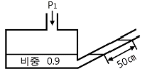
- 0.225㎏/m2
- 225㎏/cm2
- 2.21kPa
- 221Pa
(정답률: 45%)
94. 습식가스미터기는 주로 표준계량에 이용된다. 이 계량기는 어떤 type의 계측기기인가?
- Drum type
- Orifice type
- Oval type
- Venturi type
(정답률: 77%)
95. 측정량이 시간에 따라 변동하고 있을 때 계기의 지시값은 그 변동에 따를 수 없는 것이 일반적이며 시간적으로 처짐과 오차가 생기는데 이 측정량의 변동에 대하여 계측기의 지시가 어떻게 변하는지 대응관계를 나타내는 계측기의 특성을 의미하는 것은?
- 정특성
- 동특성
- 계기특성
- 고유특성
(정답률: 61%)
96. KI-전분지의 검지가스와 변색반응 색깔이 바르게 연결된 것은?
- 할로겐 - [청~갈색]
- 아세틸렌 - [적갈색]
- 일산화탄소 - [청~갈색]
- 시안화수소 - [적갈색]
(정답률: 59%)
97. 다음 가스미터 중 추량식(간접식)이 아닌 것은?
- 벤투리식
- 오리피스식
- 막식
- 터빈식
(정답률: 61%)
98. 추 무게가 공기와 액체 중에서 각각 5N, 3N이었다. 추가 밀어낸 액체의 체적이 1.3×10-4m3일 때 액체의 비중은 약 얼마인가?
- 0.98
- 1.24
- 1.57
- 1.87
(정답률: 48%)
99. 온도 0℃ 에서 저항이 40Ω인 니켈저항체로서 100℃에서 측정하면 저항값은 얼마인가? (단, Ni의 온도계수는 0.0067deg-1이다.)
- 56.8Ω
- 66.8Ω
- 78.0Ω
- 83.5Ω
(정답률: 54%)
100. 기체-크로마토그래피의 충전컬럼 내의 충전물 즉 고체지지체로서 일반적으로 사용되는 재질은?
- 실리카겔
- 활성탄
- 알루미나
- 규조토
(정답률: 66%)
기계효율은 펌프의 전력 대비 유체의 유량과 압력을 얼마나 효율적으로 변환하는지를 나타내는 지표입니다.
수력효율은 유체의 흐름에 의해 발생하는 손실을 최소화하여 유체의 운동에너지를 최대한 보존하는 지표입니다.
체적효율은 유체의 입구와 출구의 단면적 차이에 따른 손실을 최소화하여 유체의 체적을 최대한 보존하는 지표입니다.
따라서, 이 세 가지 효율을 모두 고려하여 펌프의 총효율은 ηm×ηh×ηv가 됩니다.